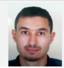

|  |
Mourad sayeh
Ingénieur en génie mecanique (technologies des vehicules et machinisme)
|
|
telephone: +000 216 29 893 840
Sidi Othman, Utique, Bizerte, Tunisie
moradsayeh371@gmail.com
|
COMPETENCE
|
- travail en équipe
- Goût pour les chiffres et l’analyse
- Rigueur, esprit d’initiative et bon relationnel
|
Logiciels maitrisés :
Pack Office Solidworks, CATIA V5, RDM6, abaqus,ANSA,
Ldorado, Elena, Mèta-poste,Mastercam .
|
EXPERIENCE PROFESIONNELLE
fev2020-Aujourd'hui
Kromberg et Schubert
Ingénieur developpement produit (département Audi/BMW )
Responsabilités professionnelles
- étudier la faisabilité des nouveau changements (faisabilité par rapport l’environnement)
- Intégrer les changements mécaniques dans le câblage (3D et 2D) pour s’adapter aux besoins clients
- Assurer les changements en synchronisant les données mécaniques et électriques à l’aide des processus VOBES et DIAD
- Contribuer à la réalisation des projets câblages ( projets réalisés : Engin AUDI TT , Autarke)
université polytechnique D’ETAT de sud de Russie M.I.Platov
SEP. 2019 – NOV. 2019
STAGE dans le cadre d’une convention à l’université polytechnique D’ETAT de sud de Russie M.I.Platov
Préparation technologique de la fabrication des machines
SEGULA technologiesTunisie
Jan. 2019 – Juin. 2019: Tunis,Tunisie
Stage : Projet de fin d’études
Etude et Conception d’équipements intérieurs en plastique d’une voiture utilitaire (garniture pied milieu monobloc)
|
Juil 2018 – Aout. 2018
Tunis, Tunisie
|
SEGULA technologies Tunisie
Stage d’études
Conception d’équipements intérieurs en plastique d’une voiture
|
Juin 2018 – Juil. 2018
Menzel Bourguiba Tunisie
CMRT Tunisie
Stage d’etudes
Gestion d’un tableau de bord d’un atelier de maintenance
Juin 2017 – Juil. 2017
Menzel Bourguiba Tunisie
VALEO Tunisie
Stage d’observation
Stage d’observation sur la fabrication du volant moteur
FORMATION
Mejez elBab,Tunisie
DIPLOME d’ingénieur en génie mécanique, option technologies des véhicules
École Supérieure des Ingénieurs de Medjez Elbab
2013 - 2016
tunis, Tunisie
Cycle préparatoire aux études d’ingénieurs Mathématiques Physiques
Institut préparatoire aux études d’ingénieurs de Tunis
2013
Utique, Tunisie
Baccalauréat Sciences de l’Inforamatique
Lycée Secondaire Utique
Independent Courses
-
HTML & CSS for Beginners – Web Fundamentals – Codecademy.com
-
JavaScript – Programming Basics, JS Apps and Build Games - Codecademy.com
-
germany languge-CSSF
-
CAO/FAO -BEM
Technical Skills
-
Application Software: Office 97-2003; Office XP, Office 2007
-
Programming Skills:HTML, CSS, JavaScript
Certifications / Awards:
- Scored highest in ACCA P1 – Governance, Risk & Ethics exam – June 2012 session amongst full time international students at Kaplan Financial, London.
- Interviewed by ACCA for “international ACCA student in UK”, interview published in January 2012 edition of ACCA Student Accountant Magazine.
- Interviewed by ACCA for “international ACCA student in UK”, interview published in January 2012 edition of ACCA Student Accountant Magazine.
Personal Information:
-
A young, determined hard and smart working person. I believe in task based roles and complete ownership of work.
-
Languages Known:Anglais, francais, Arabe
-
Hobbies:I love reading and IT related books / magazines, playing Chess, swimming, listening music, surfing Internet, self-learning through e-courses.
Declaration
I hereby declare that the details furnished above are true and correct to the best of my knowledge and belief.